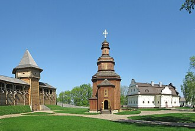
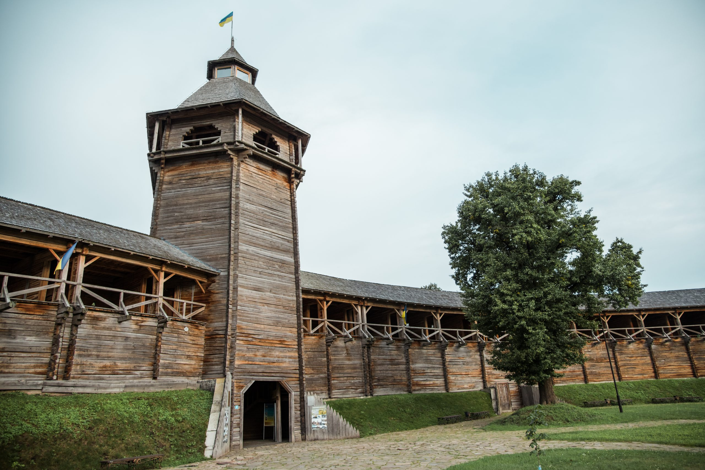

| Головна | Історія створення | Головні події |
|  |
Батурин — одне з найстаріших міст України, яке має багату історію, пов’язану з козацтвом, гетьманською добою та становленням української державності. Це місто, розташоване на берегах річки Сейм, стало свідком багатьох важливих подій, які вплинули на долю України.
Точна дата заснування Батурина невідома, але перші згадки про нього відносяться до початку XVII століття. За однією з версій, місто було засноване як фортеця для захисту від набігів татар. Назва міста, ймовірно, походить від імені його засновника — козацького отамана Батури. Згодом Батурин став важливим адміністративним і військовим центром.
|  |
Найбільш значущим періодом в історії Батурина стала друга половина XVII — початок XVIII століття, коли місто стало столицею Гетьманщини. У 1669 році гетьман Дем’ян Многогрішний переніс сюди свою резиденцію. Проте справжній розквіт Батурина пов’язаний з іменем гетьмана Івана Мазепи, який зробив місто центром політичного, культурного та економічного життя України. За Мазепи Батурин перетворився на справжню столицю: тут були зведені численні будівлі, церкви, палаци, а також фортеця, яка захищала місто. У Батурині знаходилася гетьманська скарбниця, архіви та військові ресурси. Місто стало символом могутності та незалежності українського козацтва.
Сьогодні Батурин — це місто-музей, яке зберігає пам’ять про славне козацьке минуле. Тут відновлено багато історичних пам’яток, зокрема палац гетьмана Кирила Розумовського, Воскресенська церква та інші об’єкти. У 2008 році, до 300-річчя Батуринської трагедії, було відкрито Меморіальний комплекс «Цитадель Батуринської фортеці», який став символом пам’яті про героїчне минуле.